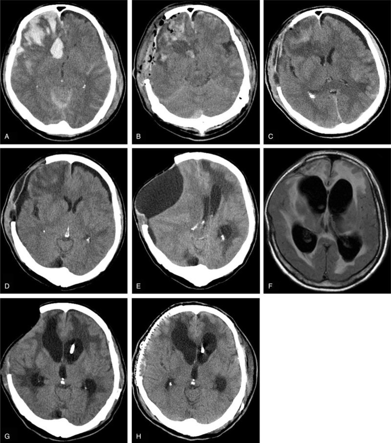
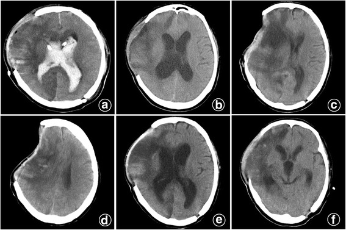

3026 — Chọc dò tủy sống ở bệnh nhân có shunt não thất hoặc sau mở sọ giảm áp: tụt não nghịch lý (paradoxical herniation)
Tags: pattern:tut-nao-nghich-ly pattern:chap-nap-lun pattern:di-lech-duong-giua vung:nao score:midline-shift protocol:choc-do-tuy-song protocol:do-ap-luc-mo protocol:cranioplasty
Mức chắc chắn (certainty): tổng hợp y văn (literature synthesis) — ghép loạt 429 ca mở sọ giảm áp với 13 ca tụt não nghịch lý (PMC4782849), 2 ca tụt não cấp sau chọc dò 30 mL (PMC5541649), 3 ca tụt não sau dẫn lưu dịch não tủy (PMC10539714), ca sau dẫn lưu thắt lưng 48 giờ (PMC11294903), loạt 27 ca hội chứng nắp sọ lún (PMC9610374) và ca hạ áp lực nội sọ âm sau chọc dò ở trẻ có shunt (PMC13224972). Đây là tổng hợp nhiều thiết kế, không phải một ca nguyên văn.
Câu hỏi thực hành: bệnh nhân 56 tuổi chấn thương sọ não đã mở sọ giảm áp, nay sốt và nghi viêm màng não; chọc dò lấy 30 mL dịch não tủy, 1 giờ sau hôn mê, đồng tử không đều, CT thấy não tụt về phía đối diện ổ khuyết sọ. Đây là tăng áp lực nội sọ hay hạ áp lực nội sọ? Câu trả lời quyết định sống còn vì hai bên dùng thuốc ngược nhau. Bài chốt theo hai trục: (1) não đang bị đẩy về đâu (về phía ổ khuyết sọ hay ra xa ổ khuyết), và (2) áp lực nội sọ còn bao nhiêu (đo được hay suy ra từ lâm sàng). Nối 3020 – Chọc dò dưới hướng dẫn hình ảnh, 3022 – Chọc dò ở người dùng kháng đông, 3014 – Đau đầu sau chọc dò, 3018 – Tăng áp lực nội sọ tự phát, 234 – Theo dõi áp lực nội sọ ở trẻ.
1. Tổng quan bệnh học – cơ chế hình ảnh: vì sao lấy 30 mL dịch lại làm não “tụt ngược”
- Định luật Monro–Kellie nói hộp sọ kín chứa ba thành phần không nén được: nhu mô não, dịch não tủy, máu. Khi mở sọ giảm áp (decompressive craniectomy — DC), hộp sọ không còn kín: một phần não và màng não chịu áp suất khí quyển (~760 mmHg) thay vì áp lực nội sọ. Cân bằng áp lực bị phá vỡ theo hai chiều:
- Mất dịch não tủy (chọc dò, dẫn lưu thắt lưng, van shunt, dẫn lưu não thất) làm thể tích dịch trong khoang dưới nhện giảm → áp lực trong sọ tụt xuống dưới mức khí quyển tác động lên vạt da.
- Áp suất khí quyển ép vạt da lún vào và trọng lực kéo não xuống → não dịch chuyển ra xa ổ khuyết sọ, tức ngược hướng với thoát vị do tăng áp lực. Đó là nghĩa của “tụt não nghịch lý” (paradoxical herniation — PH).
- Vì sao gọi là “nghịch lý”: mọi phản xạ điều trị thông thường (mannitol, tăng thông khí, lấy thêm dịch não tủy) đều làm nặng hơn, vì chúng hạ áp lực nội sọ — trong khi bệnh sinh là áp lực quá thấp. Điều trị đúng là tăng áp lực nội sọ.
- Ngưỡng định lượng lấy từ các loạt ca:
- Áp lực nội sọ lúc tụt não: 1–3 mmHg ở 4 bệnh nhân được theo dõi, so với 12–79 mmHg ở 137 bệnh nhân mở sọ giảm áp không tụt não (PMC4782849). Trị số này thấp hơn nhiều so với áp lực nội sọ bình thường 5–15 mmHg.
- Áp lực mở khi chọc dò: 2–5 cm H₂O ở 11 bệnh nhân (bình thường 6–20 cm H₂O) — tức hạ áp lực nội sọ rõ rệt (PMC4782849).
- Huyết áp lúc tụt não: 72–81/35–46 mmHg; nhịp tim 105–135 lần/phút — phản ứng giao cảm do hạ áp lực nội sọ, không phải tam chứng Cushing của tăng áp lực (PMC4782849).
- Thể tích dịch đủ gây tụt não rất nhỏ: 30 mL qua chọc dò một lần gây hôn mê sau 1–2 giờ (PMC5541649); 20 mL/ngày qua dẫn lưu thắt lưng liên tục gây tụt não rõ trên CT vào ngày hậu phẫu 56 (PMC4782849).
- TẠI SAO CT thấy “nắp sọ lún” và “não tụt ngược”: vạt da bị áp suất khí quyển đẩy vào → đường viền da lún dưới xương sọ; não mất thể tích dịch đệm nên rãnh cuộn não mất, bể đáy bị xóa, não thất bên bên ổ khuyết xẹp, và đường giữa lệch về phía ổ khuyết. Trong loạt 27 ca nắp sọ lún, thể tích não thất ba là 1,2 mL ở nhóm lún so với 2,35 mL ở nhóm không lún (p = 0,04) — tức não thất nhỏ là dấu hiệu hỗ trợ, không phải “não thất lớn” (PMC9610374).
- Tần suất: tụt não nghịch lý gặp 3,0% (13/429) sau mở sọ giảm áp một bên (PMC4782849); hội chứng nắp sọ lún gặp 63% (17/27) ở loạt chụp CT có đo đạc, trong đó 2/27 (7,4%) có tụt não nghịch lý (PMC9610374).
- Yếu tố nguy cơ — bằng chứng trực tiếp từ loạt 429 ca: so sánh 13 ca có tụt não với 416 ca không có:
- Dẫn lưu não thất ngoài (EVD): 6/13 so với 13/416
- Van shunt não thất–phúc mạc: 3/13 so với 19/416
- Chọc dò tủy sống: 11/13 so với 84/416
- Dẫn lưu thắt lưng liên tục: 6/13 so với 7/416
- Đường kính cửa sổ xương không khác biệt: 10,94 ± 0,92 cm so với 11,25 ± 1,09 cm (p = 0,242) → không phải “cửa sổ càng lớn càng nguy”, mà là mất dịch não tủy mới là yếu tố quyết định (PMC4782849).
- Thời gian: 6/14 đợt xảy ra trong 2 tuần đầu (vạt da còn căng), 8/14 đợt từ 2 tuần đến 2 tháng (vạt da đã lún) (PMC4782849). Tụt não cấp sau chọc dò có thể xảy ra 1–2 giờ sau kim (PMC5541649).
- Vì sao “nắp sọ lún” KHÔNG đủ để chẩn đoán: trong loạt trên, 8/14 đợt có nắp lún nhưng 6/14 đợt (trong 2 tuần) không có nắp lún — tác giả kết luận nắp lún “không cần thiết và không nhạy” cho tụt não nghịch lý (PMC4782849). Đây là cạm bẫy lớn nhất: chờ thấy nắp lún mới nghĩ đến chẩn đoán là chờ quá muộn.
- Nhóm có shunt là nhóm riêng: van shunt đặt áp lực mở 160 mm H₂O, trong một ca tụt não phải nâng lên 200 mm H₂O để giảm dẫn lưu (PMC4782849). Ở trẻ có shunt, chọc dò có thể gây não úng thủy áp lực âm (negative-pressure hydrocephalus) — não thất giãn ra dù áp lực nội sọ dưới khí quyển; trong loạt 29 trẻ hạ áp lực nội sọ, 37% khởi phát sau chọc dò (PMC13224972).
2. Mẫu hình + chẩn đoán phân biệt theo cơ chế (gamut)
- Mẫu hình chung: bệnh nhân đã mở sọ giảm áp hoặc có shunt, xấu đi sau một thao tác lấy dịch não tủy (chọc dò, dẫn lưu, chỉnh van) hoặc sau khi ngồi dậy/khô dịch. CT cho thấy não bị đẩy về phía ổ khuyết sọ.
- Nhóm A — mất thể tích/áp lực (não bị “hút” ra ngoài):
- Tụt não nghịch lý sau chọc dò/dẫn lưu: áp lực mở 2–5 cm H₂O, áp lực nội sọ 1–3 mmHg, đồng tử giãn, hôn mê.
- Não úng thủy áp lực âm: não thất giãn, áp lực nội sọ âm, thường sau chọc dò ở người có shunt; rất dễ bị chẩn đoán nhầm là shunt hỏng và mổ lại nhiều lần (PMC13224972).
- Dẫn lưu quá mức qua van shunt: đau đầu thế đứng, não thất xẹp, có thể có máu tụ dưới màng cứng do rách tĩnh mạch bắc cầu.
- Nhóm B — tăng thể tích/áp lực (não bị “đẩy” ra ngoài):
- Tăng áp lực nội sọ do phù não/tái chảy máu — hướng lệch ra xa ổ khuyết, vạt da căng, có thể giãn đồng tử cùng bên tổn thương.
- Khí nội sọ dưới áp lực (tension pneumocephalus) — khí chèn ép, thường sau mổ hoặc sau thủ thuật; CT có khí nội sọ lượng lớn, “núm khí” chèn giữa hai thùy trán.
- Máu tụ dưới màng cứng cấp do rách tĩnh mạch bắc cầu sau khi não xẹp xuống.
- Nhóm C — không do áp lực: động kinh, an thần quá liều, viêm màng não tiến triển, rối loạn điện giải; luôn loại trừ trước khi quy tụt não.
- Gợi nhớ 4 chữ “T–C–K–M”: Tụt não nghịch lý, Căng (tăng áp lực), Khí (pneumocephalus), Máu (máu tụ cấp).
3. Bảng so sánh phân biệt (ma trận đối chiếu)
| Thực thể (entity) | Hình ảnh điển hình | Chốt vào (rule-in) | Chốt loại (rule-out) | Gợi ý xác nhận |
|---|---|---|---|---|
| Tụt não nghịch lý (PH) | Não tụt về phía ổ khuyết sọ, rãnh cuộn não xóa, bể đáy xóa, não thất bên bên ổ khuyết xẹp, có thể nắp sọ lún, dịch dưới màng cứng | Xấu đi sau chọc dò/dẫn lưu + đường giữa lệch VỀ phía ổ khuyết + áp lực mở 2–5 cm H₂O | Đường giữa lệch RA XA ổ khuyết + vạt da căng + áp lực mở cao → tăng áp lực nội sọ | Đo áp lực mở khi chọc dò; theo dõi áp lực nội sọ nếu có; đáp ứng với Trendelenburg + truyền dịch |
| Não úng thủy áp lực âm | Não thất giãn dù áp lực thấp, thường có shunt; không có khối choán chỗ | Não thất giãn + áp lực nội sọ âm/dưới khí quyển + sau chọc dò | Não thất giãn + áp lực cao + van shunt tắc → shunt hỏng thật | Theo dõi áp lực nội sọ; không vội mổ lại shunt; blood patch/điều chỉnh van |
| Tăng áp lực nội sọ (phù não, tái chảy máu) | Não đẩy ra ngoài ổ khuyết, vạt da căng, bể đáy xóa, não thất xẹp hoặc giãn tùy mức | Đau đầu + nôn + đồng tử giãn cùng bên + hướng lệch ra xa ổ khuyết | Hướng lệch về phía ổ khuyết + huyết áp thấp → không phải tăng áp lực | CT lặp lại; đo áp lực nội sọ; không dùng mannitol khi chưa loại trừ PH |
| Khí nội sọ dưới áp lực | Khí nhiều, đối xứng hoặc chèn ép, “núm khí” giữa hai thùy trán; có thể tăng áp lực | Khí chèn ép + suy giảm tri giác sau mổ/thủ thuật | Khí ít, không chèn ép, tự tiêu → khí tồn dư lành tính | CT cửa sổ xương; chọc hút khí nếu chèn ép |
| Máu tụ dưới màng cứng cấp | Khối liềm bám mặt trong hộp sọ, không qua đường giữa, có thể lệch đường giữa | Chấn thương/đau đầu + khối liềm + não xẹp xuống sau dẫn lưu | Tổn thương trong nhu mô → không phải máu tụ dưới màng cứng | CT không cản quang; mổ nếu dày > 10 mm hoặc lệch > 5 mm |
| Dẫn lưu quá mức qua van shunt | Não thất khe, có thể tụ dịch dưới màng cứng; đau đầu thế đứng | Đau đầu tăng khi đứng, giảm khi nằm + não thất khe + van đang dẫn lưu | Đau đầu không liên quan tư thế + não thất không khe → nghĩ nguyên nhân khác | Chỉnh van lên áp lực cao hơn; blood patch nếu có rò |

Diễn tiến một ca: (A) đụng dập xuất huyết và phù não; (B) ngay sau mở sọ giảm áp; (C) ngày hậu phẫu 10 — tụ dịch dưới màng cứng; (D) ngày 30 — tụ dịch tăng sau dẫn lưu thắt lưng liên tục; (E) ngày 56 — nắp sọ lún, đường giữa lệch, GCS 4, chẩn đoán tụt não nghịch lý; (F) ngày 106 — hết lệch đường giữa sau Trendelenburg và truyền dịch; (G) đặt van shunt ngày 122; (H) vá sọ ngày 137. Nguồn: Medicine (Baltimore) 2016 (PMC4782849), Figure 3, CC BY 4.0. Không crop.4. Protocol: trước – trong – sau khi chọc dò ở người có shunt hoặc đã mở sọ
4.1 Trước khi chọc dò — 4 câu hỏi bắt buộc
- Có ổ khuyết sọ đang lún hoặc não thất bên bên đó xẹp không? Nếu có → coi như nguy cơ tụt não nghịch lý, không chọc dò để “giải áp”.
- Đường giữa lệch về phía nào? Lệch về phía ổ khuyết = cảnh báo tụt não nghịch lý; lệch ra xa = nghĩ tăng áp lực nội sọ.
- Có chỉ định thật không? Nghi viêm màng não là chỉ định mạnh nhất; nhưng nếu bệnh nhân đang có dấu hiệu tụt não thì ưu tiên cấy máu + kháng sinh kinh nghiệm, hội chẩn ngoại thần kinh, và chọc dò khi đã an toàn hoặc lấy dịch qua van shunt nếu có chỉ định.
- Có thể thay bằng cách lấy dịch khác không? Ở người có shunt, chọc van shunt (shunt tap) lấy được dịch nhưng có nguy cơ nhiễm trùng ống/túi shunt — chỉ làm khi có chỉ định và vô khuẩn nghiêm ngặt; không dùng chọc dò để đánh giá shunt có hỏng hay không vì áp lực đo được không phản ánh áp lực trong não thất.
4.2 Nếu buộc phải chọc dò — kỹ thuật “lấy tối thiểu”
- Tư thế nằm nghiêng, đầu giường ngang (không ngồi, không đầu cao) để tránh tạo chênh áp lực dọc trục.
- Đo áp lực mở bằng manometer trước khi lấy dịch; ghi lại cm H₂O. Áp lực mở 2–5 cm H₂O là dấu hiệu cảnh báo đã có hạ áp lực nội sọ (PMC4782849).
- Lấy thể tích tối thiểu đủ xét nghiệm (thường 1–2 mL mỗi ống, không “xả bớt cho nhẹ đầu”). Các ca tụt não đã báo cáo xảy ra sau 20–30 mL (PMC4782849, PMC5541649) — không có ngưỡng thể tích “an toàn” được chứng minh.
- Dừng ngay nếu bệnh nhân đau đầu tăng, buồn nôn, rối loạn tri giác, đồng tử thay đổi; không chờ lấy đủ ống.
- Không dùng chọc dò để “hạ áp lực” ở bệnh nhân đã mở sọ giảm áp — đây chính là cơ chế gây tụt não nghịch lý.
- Sau chọc dò: cho nằm Trendelenburg nếu có triệu chứng, truyền dịch, theo dõi tri giác/đồng tử ít nhất 2 giờ (thời điểm đã ghi nhận tụt não cấp là 1–2 giờ).
4.3 Xử trí tụt não nghịch lý — tăng áp lực nội sọ, không giảm
| Bước | Việc làm | Ngưỡng/liều đã báo cáo |
|---|---|---|
| 1 | Ngừng ngay mọi lấy dịch não tủy: bỏ chọc dò, kẹp dẫn lưu thắt lưng/EVD, hội chẩn chỉnh van shunt | Loạt 429 ca: ngừng dẫn lưu là bước đầu tiên (PMC4782849) |
| 2 | Tư thế Trendelenburg (đầu thấp) | Dùng ở 7/14 đợt; hiệu quả trong vài ngày (PMC4782849, PMC10539714) |
| 3 | Truyền dịch tinh thể mạnh | 2.500–4.000 mL/ngày trong loạt 429 ca (PMC4782849) |
| 4 | Bơm dịch não tủy/thể tích vào khoang dưới nhện nếu còn dẫn lưu | 20–50 mL NaCl 0,9% bơm chậm qua ống dẫn lưu ở 2 ca (PMC4782849) |
| 5 | Nâng áp lực mở van shunt | 160 → 200 mm H₂O ở 1 ca (PMC4782849) |
| 6 | Blood patch ngoài màng cứng khi có rò dịch/đau đầu thế đứng kéo dài | Hiệu quả trong ca tụt não sau chọc dò (PMC6682252); ở trẻ có shunt, blood patch + quấn cổ + chỉnh van giúp hồi phục (PMC13224972) |
| 7 | Vá sọ (cranioplasty) — điều trị triệt để | Trong loạt 429 ca, 6 ca vá sọ khoảng 3 tháng sau; 94,11% (16/17) cải thiện sau vá sọ ở loạt 27 ca nắp lún (PMC4782849, PMC9610374) |
- Theo dõi: áp lực nội sọ nếu có đầu dò; đích là đưa áp lực trở lại dương, không cần đạt trị số “bình thường” ngay. Theo dõi đồng tử, tri giác, huyết áp mỗi 15–30 phút trong giờ đầu.
- Không dùng: mannitol, tăng thông khí, lấy thêm dịch não tủy, đầu cao — tất cả làm tăng chênh áp lực và đẩy não ra xa ổ khuyết hơn.
flowchart TD
A["Bệnh nhân đã mở sọ giảm áp hoặc có shunt<br/>xấu đi sau chọc dò / dẫn lưu"] --> B["CT sọ không cản quang<br/>đo đường giữa, bể đáy, não thất, vạt da"]
B --> C{"Đường giữa lệch VỀ phía ổ khuyết<br/>hoặc não thất bên đó xẹp?"}
C -->|Có| D["Nghĩ tụt não nghịch lý"]
C -->|Không, lệch ra xa| E["Nghĩ tăng áp lực nội sọ<br/>phù não / tái chảy máu"]
D --> F["Ngừng lấy dịch não tủy<br/>kẹp dẫn lưu, hội chẩn chỉnh van"]
F --> G["Trendelenburg + truyền dịch 2.500-4.000 mL/ngày"]
G --> H{"Hồi phục tri giác<br/>và đường giữa?"}
H -->|Có| I["Duy trì, theo dõi 24-48 giờ<br/>cân nhắc blood patch"]
H -->|Không| J["Bơm 20-50 mL NaCl 0,9% qua dẫn lưu<br/>hoặc blood patch ngoài màng cứng"]
J --> K["Vá sọ sớm khi ổn định"]
E --> L["Điều trị tăng áp lực nội sọ<br/>theo chuẩn, không chọc dò thêm"]
4.4 Khoảng trống bằng chứng
- Không có thử nghiệm ngẫu nhiên so sánh thể tích dịch an toàn, thời điểm vá sọ, hoặc vai trò blood patch ở tụt não nghịch lý; các khuyến cáo hiện dựa trên loạt ca và ca lâm sàng (PMC4782849, PMC11567043, PMC10539714).
- Ngưỡng áp lực mở “an toàn” chưa được xác lập; các ca tụt não đã xảy ra với áp lực mở 2–5 cm H₂O, nhưng cũng có ca tụt não tự phát không do chọc dò (PMC13236341).
- Vai trò của theo dõi áp lực nội sọ liên tục trong việc phân biệt tụt não nghịch lý với tăng áp lực nội sọ chưa được đánh giá bằng nghiên cứu tiến cứu.
5. Biến thể bình thường và cạm bẫy
- Biến thể bình thường:
- Nắp sọ lún nhẹ, không triệu chứng sau mở sọ giảm áp — có thể chỉ là hội chứng nắp sọ lún (sinking skin flap) không có tụt não; theo dõi, không can thiệp cấp.
- Tụ dịch dưới màng cứng (subdural hygroma) lượng nhỏ sau mở sọ — thường tự tiêu; chỉ là dấu hiệu hỗ trợ, không phải chẩn đoán.
- Não thất bên bên ổ khuyết hơi xẹp hơn bên đối diện do mất cân bằng áp lực — có thể là bất đối xứng lành tính nếu không có lệch đường giữa và không có triệu chứng.
- Cạm bẫy chết người:
- Chẩn đoán “tăng áp lực nội sọ” rồi dùng mannitol/tăng thông khí ở bệnh nhân tụt não nghịch lý — làm tăng chênh áp lực, đẩy não ra xa ổ khuyết nhanh hơn.
- Chờ thấy nắp sọ lún mới nghĩ đến tụt não — 6/14 đợt xảy ra trong 2 tuần khi vạt da còn căng (PMC4782849).
- Đọc “đường giữa lệch” mà không xác định hướng — hướng lệch về phía ổ khuyết là chốt phân biệt với phù não.
- Chọc dò “để giảm áp” ở người đã mở sọ giảm áp — chính là nguyên nhân; nếu cần lấy dịch để chẩn đoán viêm màng não, lấy tối thiểu và theo dõi sát.
- Cho rằng van shunt “đang mở đúng” là an toàn — tụt não đã xảy ra 5–7 ngày sau đặt shunt dù áp lực dẫn lưu đặt trên 10 cm H₂O (PMC10539714).
- Chẩn đoán “shunt hỏng” khi thấy não thất giãn — trong não úng thủy áp lực âm, mổ lại shunt không giúp và có thể làm nặng thêm (PMC13224972).
- Vá sọ kèm dẫn lưu hút áp lực âm dưới da đầu — đã báo cáo gây thoát vị lên trên lều do áp lực âm (PMC6417323); tránh hút âm mạnh sau vá sọ.
- Bỏ qua nguyên nhân khác: động kinh, thuốc an thần, viêm màng não — tụt não nghịch lý là chẩn đoán loại trừ sau khi đã loại trừ tăng áp lực và các nguyên nhân không do áp lực.
6. Tự lượng giá — Blind Quiz
Ca 1 — Nam 56 tuổi, chấn thương sọ não nặng, đã mở sọ giảm áp và đặt dẫn lưu não thất. Ba tuần sau, não thất giãn; chọc dò lấy 30 mL dịch não tủy. Nhìn 6 ô CT, mô tả trước khi mở đáp án.

- Câu hỏi: (a) Ở các ô c–d, não bị đẩy về phía nào so với ổ khuyết sọ? (b) Vì sao lấy 30 mL dịch não tủy lại gây hôn mê 1 giờ sau chọc dò? (c) Hai việc làm đầu tiên là gì?
Bấm để hiện đáp án
- (a) Não và đường giữa lệch về phía ổ khuyết sọ, vạt da lún — hướng ngược với thoát vị do tăng áp lực. Đây là tụt não nghịch lý.
- (b) Mất 30 mL dịch não tủy làm giảm thể tích khoang dưới nhện; hộp sọ đã mở nên áp suất khí quyển tác động trực tiếp lên vạt da và trọng lực kéo não xuống → chênh áp lực dọc trục rất lớn so với thể tích dịch mất. Trong loạt ca, thời điểm xấu đi là 1–2 giờ sau chọc dò.
- (c) Ngừng ngay lấy dịch não tủy, đặt Trendelenburg, truyền dịch tinh thể mạnh (2.500–4.000 mL/ngày), hội chẩn ngoại thần kinh để kẹp dẫn lưu/chỉnh van; nếu không hồi phục → blood patch hoặc bơm 20–50 mL NaCl 0,9% qua ống dẫn lưu; vá sọ khi ổn định.
- Nguồn ảnh: BMC Neurology 2017 (PMC5541649), Figure 2 — (a) CT sau mổ; (b) não úng thủy 3 tuần sau; (c,d) hội chứng nắp sọ lún và lệch đường giữa sau chọc dò; (e,f) hết lệch đường giữa một ngày sau Trendelenburg và truyền dịch. CC BY 4.0.
Ca 2 — Bệnh nhân mở sọ giảm áp, chọc dò và dẫn lưu thắt lưng 20 mL dịch mỗi ngày. Đến ngày 56, GCS 4. Nhìn 8 ô CT, xác định thời điểm và hướng tụt não.
- Câu hỏi: (a) Ô nào cho thấy tụt não rõ nhất, và dấu hiệu chính là gì? (b) Vì sao không dùng mannitol ở thời điểm này? (c) Hai biện pháp đã giúp hồi phục?
Bấm để hiện đáp án
- (a) Ô E (ngày hậu phẫu 56): nắp sọ lún, tụ dịch dưới da đầu tăng, vỏ não bị ép dẹt, đường giữa lệch rõ, GCS 4. Đây là tụt não nghịch lý.
- (b) Mannitol hạ áp lực nội sọ, làm tăng chênh áp lực giữa khoang dưới nhện và khoang ngoài sọ, đẩy não ra xa ổ khuyết — tức làm nặng tụt não nghịch lý.
- (c) Ngừng dẫn lưu thắt lưng, Trendelenburg và truyền dịch tĩnh mạch nhanh; sau đó đặt van shunt (ngày 122) và vá sọ (ngày 137). CT ngày 106 (ô F) cho thấy hết lệch đường giữa.
- Nguồn ảnh: Medicine (Baltimore) 2016 (PMC4782849), Figure 3, CC BY 4.0.
Bài liên quan chéo
- 3020 – Chọc dò tủy sống khó dưới hướng dẫn hình ảnh (kỹ thuật chọc dò khi mất mốc)
- 3022 – Chọc dò tủy sống ở người dùng kháng đông (nguy cơ máu tụ — cùng bối cảnh “chọc dò ở người nguy cơ cao”)
- 3024 – Chọc dò quanh tiêu sợi huyết (biến chứng chảy máu sau chọc dò)
- 3014 – Đau đầu sau chọc dò (PDPH) (hạ áp lực nội sọ không có ổ khuyết sọ)
- 3018 – Tăng áp lực nội sọ tự phát (đối cực: áp lực mở cao)
- 234 – Tăng áp lực nội sọ & theo dõi đa phương thức ở trẻ (EVD, CPP, ICP)
- 3002 – Shunt não thất–màng phổi & não thất–tĩnh mạch (biến chứng shunt)
- 212 – Xuất huyết sọ: ICH/SAH/SDH/EDH (máu tụ dưới màng cứng cấp sau dẫn lưu)
Ảnh
3026_tut-nao-nghich-ly_CT-PMC4782849-F3.jpg— 8 ô CT một ca tụt não nghịch lý sau dẫn lưu thắt lưng 20 mL/ngày, Medicine (Baltimore) 2016 (PMC4782849), Figure 3, CC BY 4.0.3026_tut-nao-sau-choc-do_CT-PMC5541649-F2.jpg— 6 ô CT: não úng thủy sau mở sọ, tụt não sau chọc dò 30 mL, hồi phục sau Trendelenburg và truyền dịch, J Neurosurg Case Lessons 2026 (PMC5541649), Figure 2, CC BY 4.0.- Nguồn + giấy phép từng ảnh:
images/CREDITS.md.
Không dùng để chẩn đoán độc lập khi chưa có người hướng dẫn.